The components pyramid

Component
A component is a (usually) small, self-contained and reusable pieces of HTML, CSS and JavaScript that only renders content.
It doesn't handle any state/context (except maybe its own internal rendering state) hence we can say it's "dumb".
Widget
A widget is a reusable component holding a single "business" feature and using dumb components for rendering.
It usually has a state but has routing and does not impact the page its contained in. It can however share its state with other widgets (typically am e-commerce basket widget).
It's basically a small reusable application.
SPA
A single page application (SPA) is a full JavaScript application handling state and using a router to handle its (full or partial) views.
It's not reusable per se and usually manages all its assets by itself.
SPAs usually ship with components that are not reusable in other contexts. They can integrate reusable (shared) components and widgets of course.
Starting a new Vue project
-
npm install -g @vue/cli
-
vue new project
-
eslint / prettier config
The Vue golden rules
Read the doc
Use vue-cli
Don't install jQuery
Don't play with the dom directly
Don't modify data in components
Use vue linter
=> Use props with default values
=> () => ({}), () => []